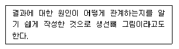
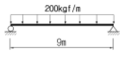
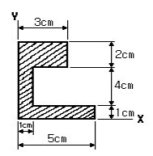
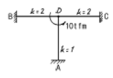
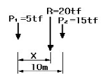
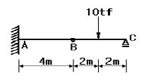
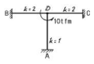

건축기사 (2005-05-29 기출문제)
1과목: 건축계획
1. 공장 건축의 레이아웃 계획에 관한 설명 중 옳지 않은 것은?
- 다품종 소량생산이나 주문생산 위주의 공장에는 공정 중심의 레이아웃이 적합하다.
- 레이아웃 계획은 작업장 내의 기계설비 배치에 관한 것으로 공장규모변화에 따른 융통성은 고려대상이 아니다.
- 고정식 레이아웃은 조선소와 같이 제품이 크고 수량이 적을 경우에 적용된다.
- 플랜트 레이아웃은 공장건축의 기본설계와 병행하여 이루어진다.
(정답률: 76%)

2. 다음 한국목조건축양식에 관한 기술 중 옳은 것은?
- 다포식은 고려초기부터 시작되어 조선시대에 이르러 많이 사용되었다.
- 주심포식은 다포식에 비해 외형이 정비되고 장중한 외관을 갖는다.
- 절충식은 다포식을 주로하고 주심포식의 세부수법을 절충한 형식이다.
- 익공식은 고려시대에 형상이 체계화되어 조선시대의 대규모 건축물에 널리 사용되었다.
(정답률: 30%)
3. 쇼핑센터 계획에 대한 설명 중 옳지 않은 것은?
- 전문점들과 중심상점의 주출입구는 몰에 면하지 않도록 한다.
- 페데스트리언 지대(pedestrian area)의 구성을 통해 구매의욕을 도모하고 휴식공간을 마련한다.
- 몰(mall)에는 확실한 방향성과 식별성이 요구된다.
- 2차적 고객유도를 위해 은행, 우체국, 미장원 등 소규모 편익시설을 포함시킨다.
(정답률: 81%)
4. 은행건축 계획에 관한 설명 중 옳은 것은?
- 은행실이란 은행건축의 주체를 이루는 곳이며, 객장과 영업장으로 나누어진다.
- 금고실은 도난 감시상 안전한 위치에 있어야 하기 때문에 영업장의 구석 보다는 한가운데 있는 것이 좋다.
- 야간 금고는 주출입문 근처에 두지 않도록 한다.
- 일반적으로 출입문은 안여닫이로 하며, 어린이들의 출입이 많은 지역에서는 회전문을 사용한다.
(정답률: 46%)
5. 노크스의 계산식에 의한 사무소의 엘리베이터 대수산정의 가정 조건으로 부적당한 것은?
- 2층 이상 거주자 전부의 30%를 15분간에 한쪽 방향으로 수송한다.
- 실제 주행속도는 정규속도의 80%로 본다.
- 엘리베이터가 1층에서 손님을 태우기 위한 시간을 10초로 한다.
- 엘리베이터는 정원의 90%가 타는 것으로 본다.
(정답률: 48%)
6. 주택의 동선계획에 관한 설명 중 틀린 것은?
- 동선의 형은 가능한 한 단순하게 한다.
- 개인, 사회, 가사 노동권의 3개 동선을 일치시킨다.
- 동선은 가능한 한 굵고 짧게 한다.
- 동선에는 공간이 필요하고 가구를 두지 않는다.
(정답률: 65%)
7. 종합병원의 건축계획 방침 중 옳지 않은 것은?
- 결핵병동은 원칙적으로는 일반종합병원에 포함시키지 않는다.
- 수술부의 위치는 외래부와 병동사이에 둔다.
- 부속 진료부에는 방사선부, 수술부, 분만부, 물리치료부가 포함된다.
- 외래 진료부의 구성 단위는 간호 단위를 기본 단위로 한다.
(정답률: 54%)
8. 다음의 극장 건축에 관련된 용어에 대한 설명 중 옳지않은 것은?
- 그리드 아이언(grid iron):무대 천장 밑에 설치한 것으로 배경이나 조명 기구 등이 매달린다.
- 플라이 갤러리(fly gallery):무대 주위의 벽에 설치되는 좁은 통로이다.
- 사이클로라마(cyclorama):무대의 제일 뒤에 설치되는 무대 배경용 벽이다.
- 그린룸(green room):무대와 출연자 대기실 사이에 있는 조그만 방으로 출연자들이 출연 바로 직전에 기다리는 공간이다.
(정답률: 50%)
9. 학교운영방식의 종류 중 학급, 학생 구분을 없애고 학생들은 각자의 능력에 맞게 교과를 선택하고 일정한 교과가 끝나면 졸업하는 방식은?
- 플래툰형(platoon type)
- 달톤형(dalton type)
- 교과교실형(department system)
- 종합교실형(usual type)
(정답률: 68%)
10. 호텔의 퍼블릭 스페이스(public space) 계획에 대한 설명 중 가장 부적절한 것은?
- 프론트 오피스는 기계화된 설비보다는 많은 사람을 고용하므로써 고객의 편의와 능률을 높혀야 한다.
- 프론트 데스크 후방에 프론트 오피스를 연속시킨다.
- 로비는 개방성과 다른 공간과의 연계성이 중요하다.
- 주식당은 외래객이 편리하게 이용할 수 있도록 출입구를 별도로 설치한다.
(정답률: 79%)
11. 다음 중 백화점 모듈결정요인과 가장 거리가 먼 것은?
- 지하주차장의 주차방식과 주차폭
- 에스컬레이터의 유무
- 엘리베이터의 배치방식
- 화장실의 크기
(정답률: 72%)
12. 종합병원의 외래진료부를 클로즈드 시스템으로 계획할 경우 고려할 사항에 대한 설명 중 가장 부적절한 것은?
- 1층에 두는 것이 좋다.
- 약국, 회계 등은 정면출입구 근처에 설치한다.
- 진료 분야별로 분산시키는 것이 좋다.
- 부속 진료시설을 인접하게 한다.
(정답률: 61%)
13. 건축설계과정에 관한 기술 중 가장 적합하지 않은 것은?
- 건축설계 첫단계에서 검토할 사항은 대지분석이다.
- 건축주의 의도를 충분히 이해한다.
- 건축의 조형을 내부기능에 못지 않게 중요시 한다.
- 조경설계는 건축설계가 완성된 후에 한다.
(정답률: 65%)
14. 아파트 각 평면형식에 대한 설명으로 옳지 않은 것은?
- 홀형은 계단 또는 엘리베이터홀로부터 직접 주거단위로 들어가는 형식이다.
- 편복도형은 복도가 개방형이므로 각호의 통풍 및 채광이 양호하다.
- 중복도형은 대지에 대해서 건물이용도가 높다.
- 집중형은 프라이버시가 좋으나 기후조건에 따라 기계적 환경조절이 필요한 형이다.
(정답률: 50%)
15. 미술관 계획에 관한 설명 중 부적당한 것은?
- 중앙홀 형식은 대지의 이용률은 높으나 장래의 확장에 다소 무리가 있다.
- 디오라마 전시는 현장성에 충실하도록 표현하기 위한 기법이다.
- 동선체계의 가장 일반적인 방법은 일방통행에 의한 일반관람이 이루어지게 하는 것이다.
- 정광창 채광방식은 채광량이 많아 유리 전시대(glasscase)내의 공예품 전시물에 적당하다.
(정답률: 59%)
16. 아파트 건축에서 복층형식(maisonette type)에 대한 설명 중 틀린 것은?
- 전체적으로 유효면적이 증가된다.
- 복도면적이 늘어난다.
- 엘리베이터 정지층수를 줄일 수 있다.
- 소규모 주택에는 면적면에서 불리하다.
(정답률: 60%)
17. 건축의 모듈러 코디네이션(modular coordination)에 관한 설명과 가장 거리가 먼 것은?
- 건축의 공업화를 위한 선행조건이 된다.
- 절단에 의한 재료의 낭비를 줄인다.
- 다른 부품과의 호환성을 제공한다.
- 건물의 내구성능을 높인다.
(정답률: 49%)
18. 한국 고대사찰배치 중 1탑 3금당 배치의 대표적인 예는?
- 미륵사지
- 불국사지
- 청암리사지
- 정림사지
(정답률: 39%)
19. 극장의 무대계획에 대한 설명 중 옳지 않은 것은?
- 무대의 폭은 적어도 프로시니엄 아치 폭의 2배, 깊이는 프로시니엄 아치 폭 이상이어야 한다.
- 프로시니엄 아치의 바로 뒤에는 막이 쳐지는데, 이 막의 위치를 커튼 라인이라고 한다.
- 프로시니엄 아치는 일반적으로 장방형이며, 종횡의 비율은 황금비가 많다.
- 좌우로 활주이동시키는 왜건형식은 무대의 양쪽이 좁고 깊이가 깊은 경우에 채용되는 방식이다.
(정답률: 40%)
20. 도서관의 세부 건축계획에 대한 설명 중 가장 부적당한 것은?
- 서고의 수장능력은 능률적인 작업용량으로서 서고면적1m2당 350 ~ 450권, 평균 400권이다.
- 안전개사식 출납시스템에서는 도서열람의 체크시설이 필요하다.
- 캐럴은 개인 연구용 열람실로서 서고의 내부에 설치 하여도 무관하다.
- 열람실의 서가는 도서의 선택 및 열람의 용이성에, 서고 내에 있는 서가는 정리, 수납에 중점을 둔다.
(정답률: 66%)
2과목: 건축시공
21. 프리캐스트 철근 콘크리트 공사의 내구성 확보를 위한 기준으로 옳지 않은 것은?
- 단위시멘트량의 최소값은 300kg/m3로 한다.
- 물시멘트비는 60% 이하로 한다.
- 콘크리트에 함유되는 염화물량은 NaCl로서 0.3kg/m3 이하로 한다.
- 동결융해를 받을 가능성이 있는 콘크리트는 AE콘크리트로 한다.
(정답률: 20%)
22. 아스팔트 방수공법은 어느 방수법에 속하는가?
- 피막 방수법
- 모체 방수법
- 도포 방수법
- 시트 방수법
(정답률: 33%)
23. 판 유리에 관한 설명 중 옳지 않은 것은?
- 망입유리는 화재시 조각이 날리지 않으므로 방화문에 사용할 수 있다.
- 이중유리는 단열, 차음, 방서의 특성을 가지므로 방화문에 적당하다.
- 강화유리는 절단할 수 없으므로 주문할 때 정한 치수로 해야한다.
- 신축중인 건물에 유리를 끼우는 시기는 일반적으로 내부마감 공사가 시작되기 전에 끼워야 한다.
(정답률: 43%)
24. 콘크리트의 중성화와 가장 관계가 깊은 것은?
- 산소
- 이산화탄소
- 염분
- 질소
(정답률: 49%)
25. 콘크리트용 부순 굵은 골재의 입형판정 실적율의 최소치는?
- 37%
- 55%
- 63%
- 75%
(정답률: 25%)
26. 철문을 양면칠할 경우 칠을 할 면적 계산은 다음 중 어느 것이 가장 적당한가? (단, 문틀, 문선 포함)
- 안목면적의 1.1 - 1.7배
- 안목면적의 1.8 - 2.1배
- 안목면적의 2.4 - 2.6배
- 안목면적의 3.0 - 4.0배
(정답률: 45%)
27. 다음 중 ALC(AUTOCLAVED LIGHTWEIGHT CONCRETE) 패널의 설치공법이 아닌 것은?
- 수직철근 공법
- 슬라이드 공법
- 커버플레이트 공법
- 피치 공법
(정답률: 43%)
28. 시멘트 액체방수에 대한 기술 중 옳지 않은 것은?
- 시멘트 방수제를 모체에 침투시키거나 방수제를 혼합한 모르타르를 바르는 방수공법이다.
- 방수모르타르 바름은 방수제를 혼합반죽한 모르타르를 2∼3회 발라 총두께가 10∼20mm 정도로 바른다.
- 방수층이 넓을 때에는 적당한 위치에 신축줄눈을 시공 한다.
- 하절기에는 낮시간을 이용하여 작업을 실시하여 능률을 높인다.
(정답률: 41%)
29. TQC를 위한 7가지 도구 중 보기에서 설명하는 것은 무엇인가?

- 히스토그램
- 특성요인도
- 각종 그래프
- 체크시트
(정답률: 50%)
30. 미장재료의 경화에 대한 설명으로 틀린 것은 ?
- 석회는 수중에서 경화하지 않는다.
- 소석고는 물을 가하면 석고성분으로 환원하여 경화한다.
- 무수석고 플라스터는 응결시간이 길고 응결경화에 의한 수축이 거의 없다.
- 마그네시아 시멘트는 수경성 물질이다.
(정답률: 21%)
31. 다음 중 거푸집내에 자갈을 먼저 채우고, 공극부에 유동성이 좋은 모르타르를 주입해서 일체의 콘크리트가 되도록한 공법으로 주로 탱크(tank)의 기초, 지수벽 등의 콘크리트, 차폐콘크리트, 수중콘크리트, 콘크리트 구조물의 보수 등에 사용하는 공법은?
- 압입공법
- 진공콘크리트공법
- 뿜칠콘크리트공법
- 프리팩트콘크리트공법
(정답률: 52%)
32. 공사현장에 125명이 근무할 가설사무소를 건축할 때 기준 면적으로 옳은 것은?
- 500m2
- 437.5m2
- 412.5m2
- 375m2
(정답률: 45%)
33. 테라조(terrazzo)현장 갈기에 대한 시공 내용중 옳지 않은 것은?
- 여름철 갈기는 3일 이상 충분히 경화시킨 다음 갈기 시작한다.
- 초벌 갈기는 돌알이 균등하게 나타나도록 하고 바로 이어서 중갈기를 행한다.
- 정벌 갈기는 중갈기가 끝나고 시멘트 풀 먹임을 2∼3회 거듭한 후 행한다.
- 광내기 왁스칠은 시간을 두고 얇게 여러번 행하는 것이 좋다.
(정답률: 64%)
34. 벽돌에 생기는 백화를 방지하는데 효과가 없는 것은?
- 잘 소성된 벽돌을 사용한다.
- 창대 기타 돌출부의 상부에 우수가 침투하지 않도록 한다.
- 줄눈 모르타르에 방수제를 넣는다.
- 줄눈 모르타르에 석회를 넣어 바른다.
(정답률: 73%)
35. 시스템화 거푸집중 철재 패널폼에 대한 설명으로 옳지 않은 것은 ?
- 일반 합판 거푸집에 비하여 시공의 정밀도가 높다.
- 타 거푸집 시스템과의 조합이 쉽다.
- 거푸집 이음부위가 없어 시멘트페이스트의 누출이 생기지 않는다.
- 곡면 시공이 어렵다.
(정답률: 29%)
36. 벽돌공사 중 창대쌓기에서 창대 벽돌은 공사시방에 정한 바가 없을 때에는 그 윗면을 몇도의 경사로 옆세워 쌓는가?
- 10°
- 15°
- 20°
- 25°
(정답률: 77%)
37. 철골공사에 관한 사항 중 옳지 않은 것은?
- 볼트접합부는 부식하기 쉬우므로 방청도장을 하여야 한다.
- 볼트죄기에는 임팩트렌치, 토크렌치 등을 사용한다.
- 철골은 화재에 의한 강성저하가 심하므로 내화피복을 하여야 한다.
- 용접 후 용접부의 안전성을 확인하기 위한 비파괴 검사에는 침투탐상법, 초음파 탐상법 등이 있다.
(정답률: 65%)
38. 건축물의 지정공사에 사용하는 말뚝의 이음방법이 아닌 것은?
- 충진식 이음
- 볼트식 이음
- 용접식 이음
- 맞댐 이음
(정답률: 38%)
39. 발주자가 입찰자로 하여금 입찰내역서상에 동 입찰금액을 구성하는 공사중 하도급할 공종, 하도급금액, 하수급예정자 등 하도급에 관한 사항을 기재하여 입찰서와 함께 제출하도록 하는 제도는?
- 부대입찰
- 대안입찰
- 내역입찰
- 사전자격심사(P.Q)
(정답률: 23%)
40. 흙막이 설계시 고려하는 측압계수는 지하수위에 따라 변화하는데, 단단한 점토의 측압계수(k)로 올바른 것은?
- 0.2∼0.5
- 0.6∼0.8
- 0.9∼1.0
- 1.1∼1.2
(정답률: 27%)
3과목: 건축구조
41. 길이 5.0m인 기둥의 지점 조건에 따른 유효좌굴길이가 옳게 연결된 것은?
- 양단 고정인 경우 4.0 m
- 일단 고정, 일단 자유인 경우 7.5m
- 양단 힌지인 경우 5.0m
- 일단 고정 일단 힌지인 경우 6.0m
(정답률: 57%)
42. 독립기초(자중포함)가 축방향력 50tf, 휨모멘트 5tf·m를 받을 때 기초 저면의 편심거리는?
- 0.1m
- 0.2m
- 0.3m
- 0.4m
(정답률: 40%)
43. 그림과 같은 단순보를 I-200⒡100⒡7로 설계하였다면 최대 처짐량은? (단, I-200⒡100⒡7의 단면 2차 모멘트 Ix=2180cm4 , 탄성계수 E=2.1⒡106kgf/cm2 이다.)

- 3.21 cm
- 3.36 cm
- 3.45 cm
- 3.73 cm
(정답률: 33%)
44. 외력에 의해 발생하는 부재내의 응력에 대응하여 미리 부재내에 응력을 넣어 외력에 대응토록 하는 원리로 만든 구조는?
- 입체트러스구조
- 현수식구조
- 프리스트레스트구조
- 프리캐스트구조
(정답률: 63%)
45. 그림과 같은 단면의 X,Y 축으로부터 도심까지의 거리 (xo, yo)는? (단, 단위는 cm이다.)

- (1.3 , 3.1)
- (2.0 , 4.2)
- (1.2 , 2.8)
- (1.6 , 3.4)
(정답률: 47%)
46. 철골조의 판보(plate girder)에 관한 기술 중 옳지 않은 것은?
- 플랜지(flange)덧판의 겹침수는 보통 5장 이하, 최고 6장까지로 한다.
- 스티프너(stiffner)는 웨브판의 좌굴을 방지하기 위하여 사용한다.
- 웨브의 이음은 전단력이 최소인 장소에 두고 이음에 쓰이는 덧판은 플랜지단면적 이상의 것으로 한다.
- 플랜지덧판의 길이는 필요한 위치보다 연장하고 그 리벳수는 그 위치에서 부담하는 응력을 전달할 수 있도록 정한다.
(정답률: 46%)
47. 미장이 안 된 표준형 벽돌벽 1.5B 벽체의 두께는? (단, 공간쌓기 아님)
- 280 ㎜
- 290 ㎜
- 300 ㎜
- 310 ㎜
(정답률: 54%)
48. 그림과 같은 라멘에 있어서 A점의 모멘트는 얼마인가? (단, k는 강비이다.)

- 1 tf·m
- 2 tf·m
- 3 tf·m
- 4 tf·m
(정답률: 54%)
49. 그림에서 R은 평행한 두힘 P1, P2의 합력이다. 합력 R이 작용하는 점을 P1으로부터 x라 할 때 x의 값으로 맞는 것은?

- 7.3m
- 7.5m
- 7.8m
- 8.1m
(정답률: 50%)
50. 단면의 성질에 관한 다음 기술 중 틀린 것은?
- 도심을 지나는 두 직교축에 대한 단면 2차 모멘트의 합은 방향에 따라 다르다.
- 단면 상승 모멘트의 단위는 cm4, m4 이다.
- 직경 D인 원형단면의 단면계수
 이다.
이다. - 단면의 도심을 통과하는 축에 대한 단면 1차 모멘트는 0이다.
(정답률: 14%)
51. 철근콘크리트구조의 극한강도설계법에서 하중조합에 따른 소요강도에 대한 표현 중 틀린 것은? (단, U:계수하중, D:고정하중, L:활하중, E:지진하중, W:풍하중)
- U = 0.75(1.4D+1.7L+1.5E)
- U = 1.4D+1.7L
- U = 0.75(1.4D+1.7L+1.7W)
- U = 0.9D+1.3W
(정답률: 20%)
52. 그림과 같은 부재의 A점의 휨모멘트의 값으로 옳은 것은? (단, 겔버보임)

- 10.0 tfㆍm
- 20.0 tfㆍm
- 40.0 tfㆍm
- 60.0 tfㆍm
(정답률: 43%)
53. 철근콘크리트 압축부재 설계의 제한 사항에 대한 설명으로 옳은 것은?
- 띠철근 압축부재 단면의 최소 치수는 300mm 이다.
- 압축부재의 축방향 주철근의 최소 개수는 직사각형 띠철근 내부의 철근의 경우 6개이다.
- 띠철근 압축부재의 단면적은 최소 40,000mm2 이상이어야 한다.
- 나선철근 압축부재 단면의 심부지름은 최소 200mm 이상 이어야 한다.
(정답률: 21%)
54. 블록구조에서 인방보에 대한 설명 중 옳지 않은 것은?
- 벽 단부에서 20cm 이상 물리게 한다.
- 기성 콘크리트보 또는 철보를 걸쳐 대어 만들 수 있다.
- 철근은 양단을 고정지지로 구조계산하여 산정한다.
- 철근콘크리트보를 제자리에서 만들어 인방보를 구성할수 있다.
(정답률: 35%)
55. 한변이 5㎝인 정방형 단면의 길이가 1m인 강재에서 50tf의 인장력이 작용할 때 늘어난 길이는? (단 강재의 탄성계수값은 2.1x105kgf/cm2임.)
- 4.8㎜
- 9.5㎜
- 48㎜
- 95㎜
(정답률: 44%)
56. 고정하중에 의한 모멘트 100kN·m, 적재하중에 의한 모멘트 80kN ·m가 작용하는 단근장방형보에서 극한강도설계법에 의거하였을 때 소요 인장철근으로 가장 적당한 것은? (단, b=300mm, d=440mm, fck=21MPa, fy=400MPa, D22(a1=387mm2), ø =0.9)
- 4-D22
- 5-D22
- 6-D22
- 7-D22
(정답률: 38%)
57. 다음의 말뚝에 관한 설명 중 틀린 것은?
- 말뚝은 지지하는 상태에 따라 지지말뚝과 마찰말뚝으로 대별된다.
- 말뚝기초의 내력은 말뚝의 지지력과 지반의 지내력의 합계가 되지만 일반적으로 말뚝의 지지력은 무시한다.
- 말뚝의 지지력은 일반적으로 시일이 경과함에 따라 증가한다.
- 지지말뚝의 경우 말뚝저항의 중심은 말뚝의 끝에 있다.
(정답률: 53%)
58. 조적조 벽체에 관한 설명 중 옳지 않은 것은?
- 내력벽의 길이는 10m를 넘을 수 없다.
- 내력벽으로 둘러싸인 부분의 바닥면적은 80m2를 넘을 수 없다.
- 하나의 층에 있어 개구부와 바로 위층의 개구부까지의 수직거리는 90cm 이상으로 해야 한다.
- 각 층의 대린벽으로 구획된 벽에서는 개구부의 나비의 합계는 그 벽길이의 1/2이하로 한다.
(정답률: 29%)
59. 다음 조건을 만족하는 철근콘크리트 벽체의 최소 수직철근량과 최소 수평철근량은 얼마인가? (조건, 벽체 길이: 3,000mm, 벽체 높이: 2,600mm, 벽체 두께: 200mm, fy = 400MPa, D16)
- 최소 수직철근량: 720mm2, 최소 수평철근량: 1,040mm2
- 최소 수직철근량: 720mm2, 최소 수평철근량: 1,020mm2
- 최소 수직철근량: 730mm2, 최소 수평철근량: 1,060mm2
- 최소 수직철근량: 730mm2, 최소 수평철근량: 1,040mm2
(정답률: 36%)
60. 철근콘크리트 부재에 사용되는 전단철근에 대한 설명 중 옳지 않은 것은?

- 철근콘크리트 부재의 축에 직각으로 배치된 용접철망은 전단철근으로 사용할 수 없다.
- 철근콘크리트 부재의 경우 주인장철근에 30°이상의 각도로 구부린 굽힘철근을 전단철근으로 사용할 수 있다.
- 전단철근의 설계기준항복강도는 400MPa를 초과할 수 없다. (단, 용접이형철망 제외)
- 부재축에 직각으로 설치되는 스터럽의 간격은 철근콘크리트 부재의 경우 0.5d이하, 또한 600mm이하여야 한다.
(정답률: 11%)
4과목: 건축설비
61. 수도본관에서 수직높이 5.5m인 곳에 세면기를 수도직결식으로 배관하였을 경우 수도본관에는 최소 얼마의 압력이 필요한가? (단, 본관에서 세면기까지의 마찰손실압력은 0.35㎏/cm2이다.)
- 0.65㎏/cm2
- 0.85㎏cm2
- 0.9㎏cm2
- 1.2㎏cm2
(정답률: 15%)
62. 광속 3,000[㏐]인 백열전구로부터 2m 떨어진 책상에서 조도를 측정하였더니 200[㏓]가 되었다. 이 책상을 백열전구로부터 4m 떨어진 곳에 놓으면 그 책상에서의 조도는?
- 100 [㏓]
- 75 [㏓]
- 50 [㏓]
- 25 [㏓]
(정답률: 79%)
63. 건축 흡음구조 및 재료에 대한 설명 중 옳은 것은?
- 다공질 흡음재는 저, 중주파수에서의 흡음률은 크지만 고주파수에서는 흡음성이 급격히 저하한다.
- 다공질 재료의 표면이 다른 재료에 의해 피복되어 통기성이 저해되면 저, 중주파수에서의 흡음률이 상승한다.
- 단일 공동공명기는 전 주파수 영역범위에서 흡음률이 동일하다.
- 판진동형 흡음구조의 흡음판은 기밀하게 접착하는 것보다 못 등으로 고정하는 것이 흡음률이 커진다.
(정답률: 34%)
64. 냉ㆍ난방 부하 계산시 유의할 사항에 대한 설명 중 옳지 않은 것은?
- 난방시의 틈새바람에 의한 부하는 보통 현열부하만을 산정한다.
- 난방부하일 때는 내부발생열은 난방부하를 경감시키는 요소이므로 일반적으로 계산하지 않는다.
- 부하계산의 결과 열손실이 너무 큰 경우 그것을 건축적인 수법으로 해결하지 말고 공조장치로 처리하도록 한다.
- 건물의 종류 및 용도에 따라 부하의 요소는 차이가 많이 난다.
(정답률: 27%)
65. 배관재의 특성에 대한 설명 중 옳은 것은?
- 아연도강관은 평면충격에 약해 굴곡에 따른 좌굴을 일으키는 단점이 있다.
- 스테인리스 강관은 동결이나 충격에 약하다.
- 경질염화비닐관은 배관의 지지 및 고정이 어렵고 내화성이 없는 단점이 있다.
- 수도용 동관은 내식성이 뛰어나지만 마찰저항이 크다.
(정답률: 43%)
66. 다음 중 슬리브(sleeve)에 대한 설명으로 옳은 것은?
- 배관시 차후의 교체, 수리를 편리하게 하고 관의 신축에 무리가 생기지 않도록 하기 위해 사용한다.
- 가열장치 내의 압력이 설정압력을 넘는 경우에 압력을 도피시키기 위해 사용한다.
- 사이폰 작용에 의한 트랩의 봉수 파괴 방지를 위해 사용한다.
- 스케일 부착 및 이물질 투입에 의한 관 폐쇄를 방지하기 위해 사용한다.
(정답률: 57%)
67. 펌프에 관한 설명 중 옳지 않은 것은?
- 물을 높은 곳으로 보내는 경우, 흡수면으로부터 토출수면까지의 수직거리를 실양정이라고 한다.
- 펌프의 축동력은 수동력에 펌프의 효율을 곱한 것이다.
- 캐비테이션이 펌프내에서 발생하면 펌프의 성능이 저하되고 소음이나 진동을 일으킨다.
- 터보형 펌프의 특성을 계통적으로 나타내는 지수로서 비속도라고 하는 기호가 이용된다.
(정답률: 21%)
68. 다음 중 대형건물 또는 병원이나 호텔 등과 같이 고압증기를 다량 사용하는 곳 또는 지역난방 등에 주로 사용되는 보일러는?
- 수관 보일러
- 주철제 보일러
- 관류 보일러
- 입형 보일러
(정답률: 45%)
69. 일정 온도이상으로 되면 동작하는 것으로 화기를 사용하는 곳에 주로 사용되는 화재 감지기는?
- 이온화식 감지기
- 차동식 스폿 감지기
- 정온식 스폿 감지기
- 광전식 스폿 감지기
(정답률: 74%)
70. 중앙식 급탕방식 중 보일러에서 만들어진 증기 또는 고온 수를 열원으로 하고, 저탕조 내에 설치된 코일을 통해 관내의 물을 가열하는 방식은?
- 직접 가열식
- 간접 가열식
- 기수 혼합식
- 순간 가열식
(정답률: 56%)
71. 실(室)의 크기가 가로 9m, 세로 7m, 높이 3m인 교실에서, 환기(換氣)를 시간당 1회로 행할 때 환기로 인한 손실 열량(현열량)은? (단, 공기의 비열은 0.29kcal/m3 · ℃, 실내기온은 20℃ , 실외기온은 -5℃ 이다.)
- 822 kcal/hr
- 1,096 kcal/hr
- 1,370 kcal/hr
- 2,835 kcal/hr
(정답률: 56%)
72. 다음 중 엘리베이터의 안전장치와 가장 관계가 먼 것은?
- 조속기
- 전자 브레이크
- 종점 스위치
- 핸드 레일
(정답률: 63%)
73. 일반건축물에서 낙뢰의 피해를 안전하게 보호할 수 있는 범위인 보호각은 최대 얼마 이하인가?
- 30°
- 45°
- 60°
- 90°
(정답률: 34%)
74. 지하 저수조의 물을 양수능력 800 ℓ/min의 펌프로 양정 54m인 고가수조에 양수하고자 한다. 펌프효율이 80% 라면이 펌프의 소요마력은?
- 9.6 마력
- 12 마력
- 17 마력
- 22 마력
(정답률: 37%)
75. 중앙공조방식 중 전수방식으로서 펌프에 의해 냉ㆍ온수를 이송하므로 송풍기에 의한 공기의 이송 동력보다 적게 드는 것은?
- 멀티유닛 방식
- 이중덕트방식
- 팬코일 유닛 방식
- 단일덕트방식
(정답률: 58%)
76. 증기난방에 관한 설명 중 옳은 것은?
- 응축수의 환수방식에 따라 저압식과 고압식이 있다.
- 온수난방에 비하여 배관경이나 방열기가 커진다.
- 고압증기 난방시는 주증기관의 도중에 가압밸브를 설치하여 증기를 가압 공급한다.
- 하트포드 접속은 보일러의 최저 수위 이하에서의 연소를 방지할 수 있다.
(정답률: 19%)
77. 다음의 광원 중 연색성이 가장 좋은 것은?
- 메탈 할라이드램프
- 나트륨램프
- 주광색 형광램프
- 고압 수은램프
(정답률: 26%)
78. 다음의 수송설비에 대한 설명 중 옳지 않은 것은?(관련 규정 개정전 문제로 여기서는 기존 정답인 3번을 누르면 정답 처리됩니다. 자세한 내용은 해설을 참고하세요.)
- 에스컬레이터의 수송 능력은 시간당 4,000 ~ 8,000명 정도이다.
- 전동 덤웨이터는 리프트라고도 하며 사람은 타지 않고 물품만을 승강시키는 장치이다.
- 승용 엘리베이터는 1인당 하중을 75㎏으로 하여 최대정원을 구한다.
- 이동 보도는 수평으로부터 10°이내의 경사로 되어 있으며, 승객을 수평 방향으로 수송하는데 이용되는 설비이다.
(정답률: 56%)
79. 다음의 통기관의 관경에 대한 설명 중 옳지 않은 것은?
- 각개통기관의 관경은 그것이 접속되는 배수관 관경의 1/2 이상으로 한다.
- 신정통기관의 관경은 배수수직관의 관경보다 작게해서는 안된다.
- 회로통기관의 관경은 배수수평지관과 통기수직관 중 큰쪽 관경의 1/2 이상으로 한다.
- 결합통기관의 관경은 통기수직관과 배수수직관 중 작은쪽 관경 이상으로 한다.
(정답률: 42%)
80. 알카리 축전지에 대한 설명으로 옳지 않은 것은?
- 공칭전압은 2[V/셀]이다.
- 부식성의 가스가 발생하지 않는다.
- 고율방전특성이 좋다.
- 기대수명이 10년 이상이다.
(정답률: 50%)
5과목: 건축법규
81. 건축폐자재를 건축물의 신축공사를 위한 골조공사에 100분의 15이상 사용했을 경우 기준의 적용을 완화받을 수 없는 것은?
- 건축물의 용적률
- 건축물의 건폐율
- 건축물 높이제한
- 대지안의 조경
(정답률: 31%)
82. 건축지도원의 업무가 아닌 것은 ?
- 건축신고를 하고 건축중에 있는 건축물의 시공계획 및 공사관리의 지도
- 건축설비 등이 법령에 적합하게 유지·관리되고 있는지의 확인·지도 및 단속
- 신고를 하지 아니하고 용도변경한 건축물의 단속
- 허가를 받지 아니하고 건축하는 건축물의 단속
(정답률: 59%)
83. 각층바닥 면적이 2,000m2인 아파트의 승용승강기의 최소대수는? (단, 층수가 20층으로 10층과 20층은 기계실이고, 10인승기준으로 한다.)
- 8대
- 9대
- 10대
- 11대
(정답률: 35%)
84. 국토의계획및이용에관한법률에서 도시관리계획결정의 효력발생 시기는?
- 도시관리계획 결정고시일
- 도시관리계획 결정고시가 있은 날 다음날
- 도시관리계획 결정고시가 있은 날부터 3일 후
- 도시관리계획 결정고시가 있은 날부터 5일 후
(정답률: 13%)
85. 부설주차장설치기준에서 시설물과 설치기준의 연결이 잘못된 것은 ?
- 위락시설 - 시설면적당
- 관람장 - 시설면적당
- 옥외수영장 - 정원당
- 골프장 - 1홀당
(정답률: 58%)
86. 옥상광장 또는 2층 이상의 층에 있는 노대 기타 이와 유사한 것의 주위에는 높이 얼마 이상의 난간을 설치하여야 하는가?(오류 신고가 접수된 문제입니다. 반드시 정답과 해설을 확인하시기 바랍니다.)
- 1.0 미터
- 1.1 미터
- 1.2 미터
- 1.3 미터
(정답률: 14%)
87. 사용승인후 5년이 경과된 연면적 1,000m2미만의 건축물의 용도를 변경하는 경우 부설주차장을 추가로 확보하지 아니하고 건축물을 용도변경 할 수 있는 용도는?(오류 신고가 접수된 문제입니다. 반드시 정답과 해설을 확인하시기 바랍니다.)
- 무도학원
- 공연장
- 집회장
- 병원
(정답률: 13%)
88. 중층 주택을 중심으로 편리한 주거환경을 조성하기 위하여 필요한 지역은?
- 제1종 일반주거지역
- 제2종 일반주거지역
- 제1종 전용주거지역
- 제2종 전용주거지역
(정답률: 54%)
89. 공작물을 축조하고자 하는 경우 시장·군수·구청장에게 신고를 하여야 하는 공작물의 기준으로 부적합한 것은?
- 높이 4m를 넘는 광고판
- 바닥면적 20m2를 넘는 지하대피호
- 높이 6m를 넘는 기념탑
- 높이 8m를 넘는 고가수조
(정답률: 67%)
90. 건축법에 의해 허가를 받거나 신고를 한 건축물의 공사를 착수하고자 할 때 흙막이 구조도면의 제출대상의 기준으로 옳은 것은?
- 지하 2층 이상의 지하층을 설치하는 경우
- 지하 3층 이상의 지하층을 설치하는 경우
- 지표면으로부터 3m 이상의 지하를 굴착하는 경우
- 지표면으로부터 5m 이상의 지하를 굴착하는 경우
(정답률: 53%)
91. 부설주차장의 설치계획서 제출시 서류와 도면으로 옳지 않은 것은?
- 부설주차장의 배치도
- 공사설계도서 (공사가 필요한 경우)
- 토지이용상황을 판단할 수 있는 축척 1/1200 이하의 지형도
- 토지등기부등본 (건축물식주차장인 경우 건물 등기부등본 포함)
(정답률: 50%)
92. 다음 건축물의 용도분류상 관계가 잘못된 것은?
- 공관 - 단독주택
- 장례식장 - 의료시설
- 동·식물원 - 동물 및 식물관련시설
- 여객자동차터미널 및 화물터미널- 판매 및 영업시설
(정답률: 10%)
93. 건축선에 관한 내용으로 옳지 않은 것은?
- 건축물 및 담장은 건축선의 수직면을 넘어서는 아니된다. (다만, 지표하의 부분은 그러하지 아니하다.)
- 도로와 접한 부분에 있어서 건축물을 건축할 수 있는 선은 대지와 도로의 경계선으로 한다.
- 소요너비에 미달되는 너비의 도로의 경우에는 그 경계선으로부터 당해 소요너비의 2분의 1에 상당하는 수평거리를 후퇴한 선을 건축선으로 한다.
- 도로면으로부터 높이 4.5미터 이하에 있는 출입구·창문 기타 이와 유사한 구조물은 개폐시에 건축선의 수직면을 넘는 구조로 하여서는 아니된다.
(정답률: 40%)
94. 건설교통부장관이 시장 군수의 건축허가를 제한코자 할경우 최장 얼마까지 할 수 있는가? (단, 제한기간의 연장 포함)
- 1년 이내
- 2년 이내
- 3년 이내
- 4년 이내
(정답률: 42%)
95. 기계식주차장에는 도로에서 기계식주차장치출입구까지의 차로 또는 전면공지와 접하는 장소에 자동차가 대기할 수있는 장소(정류장)를 설치하여야 한다. 다음 중 정류장의 기준으로 적합한 것은?
- 주차대수가 10대를 초과하는 매 10대마다 1대분의 정류장을 확보
- 주차대수가 10대를 초과하는 매 20대마다 1대분의 정류장을 확보
- 주차대수가 20대를 초과하는 매 10대마다 1대분의 정류장을 확보
- 주차대수가 20대를 초과하는 매 20대마다 1대분의 정류장을 확보
(정답률: 59%)
96. 건축법상 건축물의 용도변경시 분류된 시설군이 아닌 것은?
- 영업 및 판매시설군
- 교육 및 의료시설군
- 공업시설군
- 주거 및 업무시설군
(정답률: 55%)
97. 다음중 공동주택의 리모델링을 위한 증축의 범위가 아닌 것은?
- 승강기
- 외부벽체
- 각 세대내의 노대
- 주택법에 의한 복리시설
(정답률: 18%)
98. 다음 중 열관류율을 가장 작게 해야 되는 곳은? (단, 지역은 중부지역)
- 외기에 직접 면하는 거실의 외벽
- 외기에 직접 면하는 최하층에 있는 거실의 바닥
- 외기에 직접 면하는 최상층에 있는 거실의 지붕
- 공동주택의 층간 바닥
(정답률: 24%)
99. 관계행정기관장의 장과 협의를 거치지 아니하고도 지구 단위계획을 변경할 수 있는 사항은?
- 건축물높이 30% 변경
- 획지면적 20% 변경
- 가구면적 20% 변경
- 건축선 2m 변경
(정답률: 50%)
100. 음용수용 배관설비에서 설계용 외기온도가 -10℃ 미만일 경우 외기에 노출된 외경이 25mm인 배관을 사용하고 발열선을 쓰지 않았을 때 급수관의 단열재 두께로 옳은 것은?
- 20mm
- 30mm
- 40mm
- 50mm
(정답률: 20%)